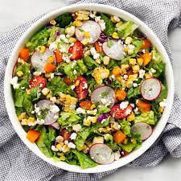

VEGETABLE SALAD

BENEFITS OF VEGETABLE SALAD
Salad contain Vitamin A,Vitamin C,beta-carotene,calcium,fiber and phytonutrients.Leafy vegetables are a good choice for a healthful diet because they do not contain cholesterol and are naturally low in calories and sodium.
STEPS TO MAKE VAGETABLE SALAD
- Take a large and clear glass bowl
- Peel the cucumber and wash in normal water along with the tomato.
- Cut the beet root, tomato and cucumber into rings.
- Sprinkle some salt and chaat masala.
- Serve this nutritional salad with any meal
- You can add your choice of vegetables such as onion, carrot, radish, etc.
- If you do not like chaat masala, then you may sprinkle some fresh lime juice to make your salad more flavorful.